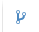
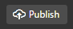
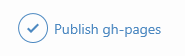
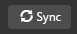

Sign up for a free GitHub account
Open GitHub Desktop
Sign in with your GitHub account info
Add your site as a new Repository
Click the Plus button in the top left corner of the window.

Select the Add tab

Click the Browse button.

Select your project folder.

A warning pops up. Click the create a repositroy link in the warning.

Click the Create repository button.

Make a Commit
Click the Changes button in the top center of the window.

Make sure all of the important site files are checked.

Type a summary of the work you have done. A good summary is short, descriptive, and present tense.


Click Commit to master.

Create a gh-pages branch
Click the branch button
Type gh-pages into the New branch name input.
Publish
Click the publish button in the top right of the window.
Make sure the GitHub tab is selected.
Click the Publish gh-pages button.
Check out your page online
Open a web browser and go to username.github.io/project-name. Replace username and project-name with your info.
Update Your Site
Any time your page changes, redo the Commit and Publish steps.
The Publish button changes to a sync button from now on.
